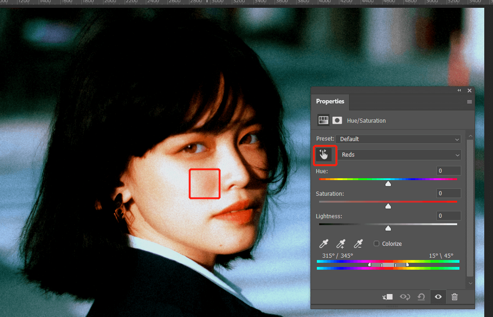

快速色彩矫正 in Photoshop

一张照片是否好看，首先要保证色彩没有偏色，也就是白平衡要正确，白平衡的调整之前介绍过通过 curve 曲线工具的，下面介绍精确匹配白平衡的方法，以及快速处理动作。
用到的技术：曲线，白场灰场黑场、auto option
原图如下：
可以看到颜色有点偏色。
手动处理
新建曲线图层，作为调整图层，然后在曲线图层上新建一个空白图层作为标记图层：
我们的目的是通过曲线图层找出图片中的最亮、最黑、灰度的部分，然后通过曲线的白场黑场灰场设置来恢复色彩平衡。
首先找到图片最黑的地方，调整曲线右侧拉刀左边，直到图片中保留最小的黑色区域：
找出一个区域，用画笔工具在最上面的图层做一个标记：
然后找图片最亮的地方，恢复曲线，从右边向左边拉，直到图片中保留最小区域的白色区域：
最上面图层做出标记：
然后找到图片中的灰色区域，方法就是建立一个50度灰图层，混合模式改为 difference，这样最接近灰色的图像就会显示为黑色，先将曲线图层关闭：
在最上面图层做出标记：
下面我们开始匹配颜色。
关闭灰度图层，将曲线图层打开并恢复默认，然后分别双击左侧三个吸管，确保都恢复为默认的黑场灰场白场的默认颜色：
点击第一个黑场的吸管，在图像标记为黑色的区域点击：
可以看到黑色颜色正确了，但是黑色区域细节有丢失，将左侧曲线向上稍微提高，恢复黑色细节：
然后点击第三个白场吸管，在图像标记为白色的区域点击：
同样的，调整右侧曲线向下，恢复高光区域细节：
最后点击第二个灰场吸管，点击灰色标记区域：
这样白平衡基本就匹配了，关闭观察标记图层。
可以看到饱和度有点高了，新建 hue 图层，手型工具点击面部饱和度过高区域：

先将区域缩小，将hue 和 饱和度调到最大，如果区域不合适，拖动下方滑块调节：
恢复调整参数，适当扩展滑块过渡区域，然后降低饱和度：
以上我们就手动完成了图片的色彩矫正，核心规则就是找到图片的黑白灰区域，然后通过曲线来匹配它们到标准颜色。
自动处理
但是手动做这个过程比较繁琐麻烦，起始 Photoshop 提供了自动化执行以上过程的工具，就在 curve 曲线工具中。
我们重新开始项目，在图像上建立曲线图层，点击曲线设置菜单中的 auto option：
选中 snap neutral midtone，然后点击上面的各个选项，观察哪个处理的最好：
确认后，曲线就自动完成了色彩校正，之后根据情况做相应调整。这里我感觉自动处理后，地面有点偏绿，正常应该是灰色的，所以在此使用灰场吸管点击地面区域，这样地面颜色就正常了：
面部饱和度过高，和上面手动处理同样的方法降低面部饱和度：
这样就快速完成了色彩修复。
标签：无